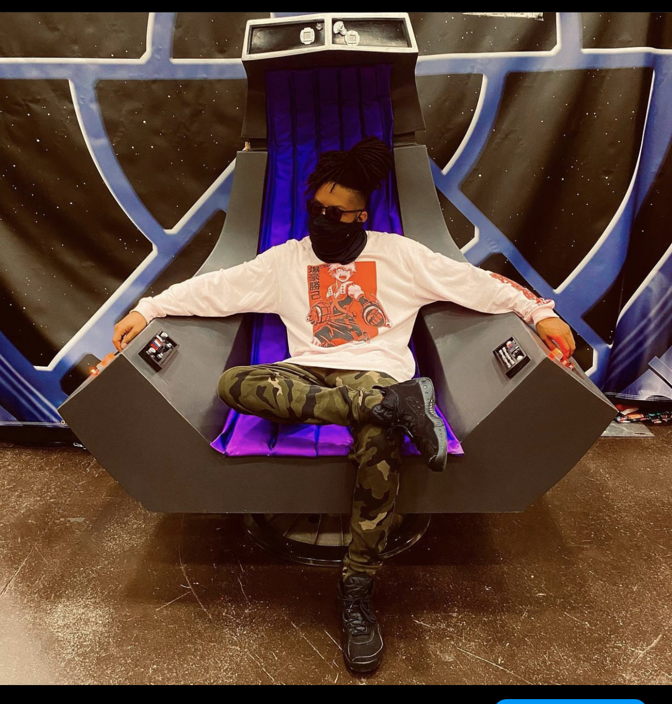

Arland Gamble

About Me
‚ÄúOnce navigating pallets on a forklift, then wielding ink as a tattoo artist, now venturing into tech‚Äôs boundless horizons. I craft narratives through skin art and code, embracing diverse paths in pursuit of creativity. üñãÔ∏èüíª #InkAndCodeExplorer‚Äù
- Born 1986 in Cincinnati,Oh
- High School Class of 2004
- University of Cincinnati 04/05
- Art Institute of Ohio-Cincinnati 2006
- Went to the Worlds Only Tattoo School in 2014
- Have four children 1 boy 3 girls
Interest and Hobbies
- Loves caribean food
- Loves to travel
- Loves Technology
See my linkedin Page